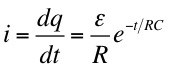
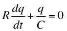
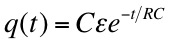
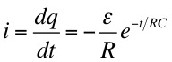

where q/C is the voltage drop across the capacitor and i is the current in the circuit.
or


which gives

which has the solution

and

where Cε is the initial charge on the capacitor and ε/R is the initial voltage across the capacitor.
Q: What did one quantum physicist say when he wanted to fight another quantum physicist?
Dr. C. L. Davis
Physics Department
University of Louisville
email: c.l.davis@louisville.edu